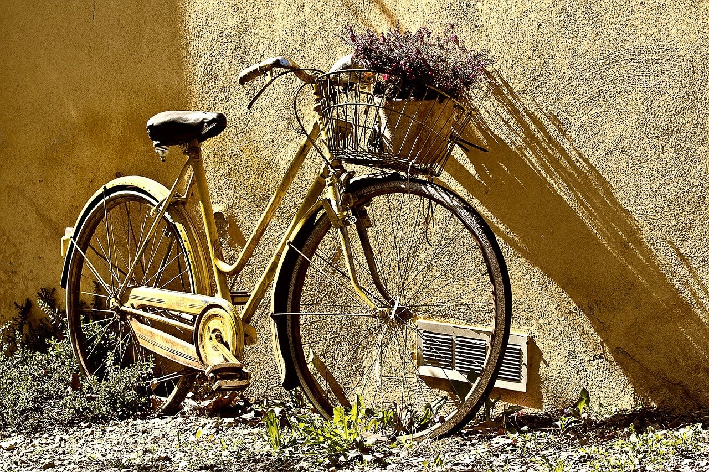

La vie à vélo
Le vélo est un mode de vie, une sensation de liberté. Même si l'on constate une augmentation des déplacements à vélo de 30%, il devient aujourd'hui un mode de transport de plus en plus tendance...
Lire la suite ...